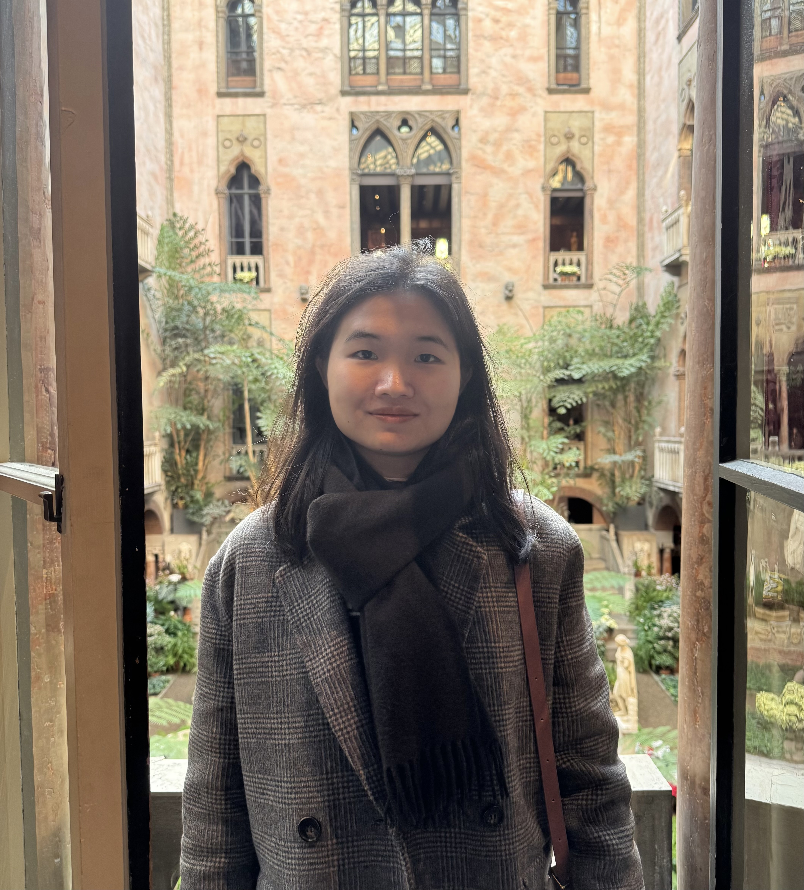

Department of Economics
Brown University
Welcome! I am a PhD candidate in Economics at Brown University. My research interests include Behavioral Economics and Market Design.
My current research studies how people make decisions in complex environments and how artificial intelligence affects judgment, learning, and calibration.
Email: zhuorong_mao@brown.edu
When Humans Inform Machines: An Experiment on AI-Assisted Financial Decisions
with Geoffroy de Clippel and Kareen Rozen
Pair-Preserving Stability in Markets with Entry (and Exit)